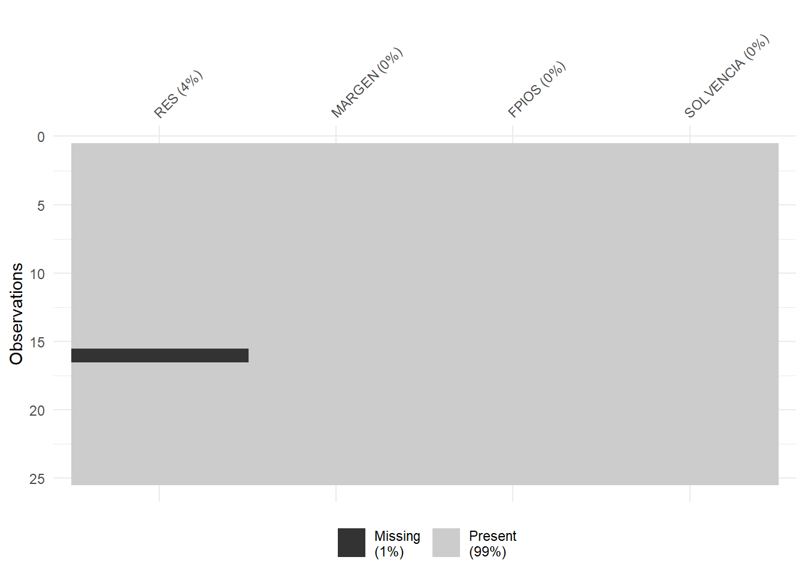
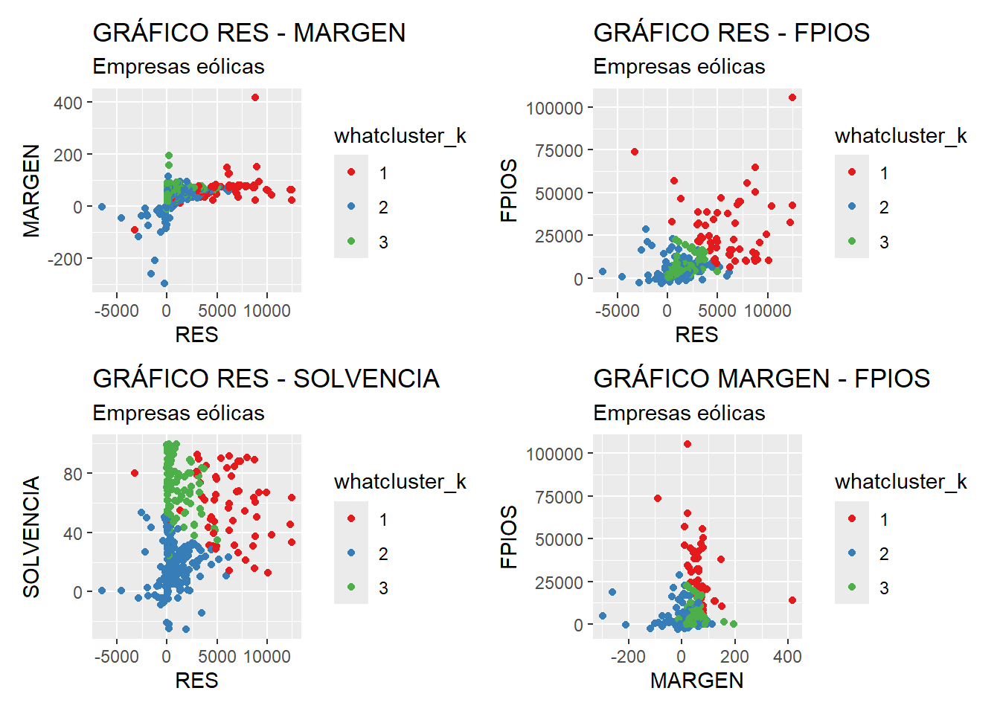

Capítulo 7 Análisis Clúster.
7.1 Introducción.
El análisis de conglomerados o análisis clúster (AC) trata de clasificar individuos o casos asignándolos a grupos homogéneos, de manera que:
Cada grupo, conglomerado o clúster contenga a los casos más parecidos entre sí, en términos de una serie de variables (variables clasificadoras).
Los grupos contengan casos que, en general, sean muy diferentes a los casos del resto de grupos, de acuerdo con las variables consideradas.
En general, el proceso de determinación de los grupos, conglomerados o clústeres de casos es el siguiente:
- Se parte de un conjunto de n casos, y para cada uno de ellos se cuenta con el valor de m variables clasificadoras.
- Se establece una medida de distancia que cuantifica lo que dos casos se parecen, considerando en conjunto los valores que poseen para las variables clasificadoras.
- Se crean los grupos, conglomerados o clústeres con los casos que poseen entre sí una menor distancia. Existen dos enfoques principales a la hora de crear los grupos de casos a partir de las distancias observadas entre los casos: los métodos jerárquicos y los métodos no-jerárquicos.
- Finalmente, se caracterizan los grupos, conglomerados o clíusteres obtenidos, y se comparan unos con otros para extraer conclusiones.
En lo que respecta a la medida de distancia entre los casos, la medida más habitual es la distancia euclídea. Así, la distancia euclídea entre dos caso, i e i’, para las m variables clasificadoras x, será:
\[ d(i, i') = \sqrt{\sum_{j=1}^{m} (x_{ij} - x_{i'j})^2} \] Esta distancia es muy sensible a la escala de las variables clasificadoras. Para evitar este inconveniente, se trabaja con las variables previamente tipificadas.
7.2 Métodos de agrupación jerárquicos.
Como se acaba de comentar, existen dos enfoques fundamentales de realizar el análisis clúster, dependiendo de cómo son los métodos de agrupación de los casos (y grupos de casos): el enfoque de los métodos jerárquicos, y el enfoque que reúne a los métodos no-jerárquicos.
Ambos enfoques tienen sus ventajas e inconvenientes, y pueden adaptarse mejor a cada problema concreto. Es importante seleccionar un buen método de agrupación, puesto que pueden proporcionar soluciones muy diferentes entre sí.
En los métodos jerárquicos, se van formando sucesivamente grupos como agrupación de otros grupos precedentes, hasta llegar a un único grupo que recoge a todos los individuos; tomando el proceso una estructura piramidal (también existen métodos jerárquicos descendientes, que parten de un único grupo que contiene a todos los casos, para acabar el n grupos de un solo caso, aunque son menos frecuentes).
Estos métodos suelen aplicarse cuando hay un número reducido de casos. También, cuando nuestro objetivo pasa por crear grupos que recojan a todos los casos, más que definir simplemente tipologías más o menos homogéneas de casos (lo que se obtiene caracterizando los grupos obtenidos). Es decir, cuando se incluyen en el análisis a todos los individuos, incluidos los outliers. De hecho, estos métodos pueden emplearse, de por sí, como técnicas de localización de outliers. Por último, también se suelen emplearse cuando se desconoce a priori el número de grupos, conglomerados o clústeres a formar.
Entre los métodos jerárquicos de agrupación más extendidos, figuran los siguientes:
Método del vecino más cercano (single linkage): la distancia que se considera entre grupos es la distancia entre sus elementos más próximos.
Método del vecino más lejano (complete linkage): la distancia que se considera entre grupos es la distancia entre sus elementos más lejanos.
Método de Ward (Ward method): se unen los grupos que dan lugar a otro grupo cuyos casos tienen una menor suma de los cuadrados de sus distancias respecto al centro de dicho grupo (menor varianza).
Otros métodos: vinculación intergrupos (average linkage between groups), vinculación intragrupos (whithin group)…
De entre ellos, ¿cuál elegir?
La cuestión no es fácil de resolver, y no tiene por qué tener una única respuesta. Por otro lado, cada método proporciona soluciones que pueden variar mucho entre sí. Una estrategia puede pasar por probar con varios métodos y se seleccionar la solución que parezca más coherente desde el punto de vista teórico, y estable desde el punto de vista empírico.
En la práctica, uno de los métodos más utilizados es el método de Ward, porque proporciona grupos muy homogéneos, ya que se basa en la minimización de la varianza o dispersión de los elementos que componen cada grupo con respecto a su centro de gravedad o centroide. Precisamente, este método será aplicado en el ejemplo práctico que desarrollaremos en R a continuación.
Vamos a considerar una serie de 4 variables que caracterizan a un grupo de 25 empresas de producción eléctrica mediante tecnología eólica. Nuestro objetivo es segmentar este conjunto de empresas, haciendo grupos homogéneos (conglomerados), y caracterizando a dichos grupos. Las variables clasificadoras son: el resultado del ejercicio (RES), el margen de beneficio (MARGEN), los fondos propios (FPIOS) y la solvencia (SOLVENCIA).
Dado que son pocos los casos (empresas) a segmentar, vamos a utilizar un métodos jerárquico de agrupación de casos. En concreto, utilizaremos el método de Ward. Así, comenzaremos creando un proyecto de RStudio donde trabajar. Por ejemplo, un proyecto llamado “cluster”. Vamos a ir a la carpeta del proyecto y vamos a guardar en ella los dos archivos de esta práctica: un archivo de Microsoft® Excel® llamado “eolica_25.xlsx” y un script denominado “cluster_eolica.R”. Si abrimos el archivo de Microsoft® Excel®, comprobaremos que se compone de tres hojas. La primera muestra un aviso sobre la utilización de los datos, la segunda el nombre y definición de las variables disponibles, y la tercera (hoja “Datos”) guarda los datos que debemos importar desde R-Studio. Estos datos se corresponden con diferentes variables económico-financieras de 25 empresas productoras de electricidad mediante generación eólica.
La primera parte del script se ocupa de importar los datos de la hoja de cálculo, limpiando previamente la memoria (Environment) de posibles objetos almacenados en sesiones anteriores:
rm(list = ls())
# DATOS
# Importando
library(readxl)
eolicos <- read_excel("eolica_25.xlsx", sheet = "Datos",
na = c("n.d.", "s.d."))
eolicos <- data.frame(eolicos, row.names = 1)
summary (eolicos)## RES ACTIVO FPIOS RENECO
## Min. : -5662 Min. : 85745 Min. : -77533 Min. :-2.813
## 1st Qu.: 2385 1st Qu.: 147743 1st Qu.: 28418 1st Qu.: 1.676
## Median : 7121 Median : 230339 Median : 70033 Median : 3.949
## Mean : 41118 Mean : 965938 Mean : 461020 Mean : 3.694
## 3rd Qu.: 10615 3rd Qu.: 443467 3rd Qu.: 177707 3rd Qu.: 5.125
## Max. :727548 Max. :13492812 Max. :6904824 Max. :12.406
## NA's :1 NA's :2
##
## RENFIN LIQUIDEZ ENDEUDA MARGEN
## Min. :-359.7730 Min. :0.078 Min. : 0.917 Min. :-615.625
## 1st Qu.: 2.7280 1st Qu.:0.697 1st Qu.: 43.039 1st Qu.: 12.582
## Median : 11.3380 Median :1.184 Median : 62.903 Median : 22.792
## Mean : 0.3039 Mean :1.354 Mean : 63.599 Mean : 7.557
## 3rd Qu.: 24.6330 3rd Qu.:1.550 3rd Qu.: 88.442 3rd Qu.: 39.476
## Max. : 52.2610 Max. :5.330 Max. :140.745 Max. : 223.956
##
## SOLVENCIA APALANCA MATRIZ DIMENSION
## Min. :-40.74 Min. :-6265.50 Length:25 Length:25
## 1st Qu.: 11.56 1st Qu.: 13.33 Class :character Class :character
## Median : 37.10 Median : 110.40 Mode :character Mode :character
## Mean : 36.40 Mean : -39.90
## 3rd Qu.: 56.96 3rd Qu.: 480.12
## Max. : 99.08 Max. : 1019.62Podemos observar cómo, en el Environment, ya aparece un objeto. Este objeto es una estructura de datos tipo data frame, se llama “eolicos” y contiene 12 columnas, una por cada una de las variables almacenadas en el archivo de Microsoft® Excel®. De estas variables, dos son de tipo cualitativo (atributos o factores), formadas por cadenas de caracteres: el nombre de la sociedad matriz (grupo empresarial) a la que pertenece (MATRIZ). En realidad, R consideró la primera columna de la hoja de Excel (NOMBRE) como una variable de tipo cualitativo o atributo (por lo que había 13 columnas); pero, al no ser una variable, sino el nombre de los casos o filas (empresas), redefinimos nuestro data frame diciéndole que esa primera columna contenía los nombres de los casos (filas).
En el análisis solo vamos a considerar como variables clasificadoras para construir los grupos o conglomerados las variables RES, MARGEN, FPIOS y SOLVENCIA. Por ello, crearemos con ellas un nuevo data frame llamado “originales” a partir de la función select() del paquete {dplyr}:
# Seleccionando variables clasificadoras para el analisis.
library(dplyr)
originales <- eolicos %>% select(RES, MARGEN, FPIOS, SOLVENCIA)
summary (originales)## RES MARGEN FPIOS SOLVENCIA
## Min. : -5662 Min. :-615.625 Min. : -77533 Min. :-40.74
## 1st Qu.: 2385 1st Qu.: 12.582 1st Qu.: 28418 1st Qu.: 11.56
## Median : 7121 Median : 22.792 Median : 70033 Median : 37.10
## Mean : 41118 Mean : 7.557 Mean : 461020 Mean : 36.40
## 3rd Qu.: 10615 3rd Qu.: 39.476 3rd Qu.: 177707 3rd Qu.: 56.96
## Max. :727548 Max. : 223.956 Max. :6904824 Max. : 99.08
## NA's :1El siguiente paso consiste en localizar los posibles missing values, ya que para realizar el análisis es necesario que todos los casos posean dato para todas las variables originales. Para tener una idea general, se puede utilizar la función vis_miss() del paquete {visdat}, que nos localizará gráficamente los missing values de las diferentes variables, y calculará el porcentaje de casos que supone, con respecto al total de observaciones.

Una vez puesta de manifiesto la existencia de un missing value, localizaremos el caso concreto que lo contiene aplicando la función filter() de {dplyr}. Se trata de la empresa “Biovent Energía S.A.”
Sabemos que ante la existencia de missing values, se puede actuar de varios modos. Por ejemplo, se puede intentar obtener por otro canal de información el conjunto de valores que no están disponibles, o recurrir a alguna estimación. En caso de que esto sea difícil, se puede optar por eliminar estos casos, en especial cuando representan un porcentaje muy reducido respecto al total de casos. En nuestro ejemplo, supondremos que hemos optado por esta última vía, y eliminaremos este caso con otro filtro:
originales %>%
filter(is.na(RES) | is.na(MARGEN) | is.na(FPIOS) | is.na(SOLVENCIA)) %>%
select(RES, MARGEN, FPIOS, SOLVENCIA) ## RES MARGEN FPIOS SOLVENCIA
## Biovent Energia SA NA 22.792 70033 38.082originales <- originales %>%
filter(! is.na(RES) & ! is.na(MARGEN) & ! is.na(FPIOS) & ! is.na(SOLVENCIA))El data frame “originales” pasa a tener 24 observaciones, ya que se ha descartado a la empresa a la que le faltaba el dato del resultado del ejercicio (RES).
El siguiente paso es la identificación de outliers. Para realizar este proceso, y dado que en nuestro análisis contamos con 4 variables, primero “resumiremos” el valor que toman dichas variables para cada caso, mediante el cálculo de la distancia de Mahalanobis. De hecho, las distancias de los diferentes casos se almacenarán en una nueva variable, a la que llamaremos MAHALANOBIS, que se incorporará al data frame “originales” por medio de la función mutate() de {dplyr}, y la función mahalanobis(). Recordemos que, en los diferentes argumentos de esta función, el punto “.” hace referencia al data frame que está delante del operador pipe (%>%).
# Identificando outliers.
originales <- originales %>% mutate(MAHALANOBIS = mahalanobis(.,
center = colMeans(.),
cov=cov(.)))Una vez creada la variable MAHALANOBIS, se estudia la existencia en sus valores de outliers mediante la construcción de un diagrama de caja o boxplot:
library (ggplot2)
ggplot(data = originales, map = (aes(y = MAHALANOBIS))) +
geom_boxplot(fill = "orange") +
ggtitle("DISTANCIA DE MAHALANOBIS", subtitle = "Empresas eólicas") +
ylab("MAHALANOBIS")En el gráfico se observa que existen, por encima de la caja, 4 outliers. Para identificarlos de modo concreto, hemos de calcular los cuartiles primero y tercero de la variable MAHALANOBIS y pasar el correspondiente filtro:
Q1M <- quantile (originales$MAHALANOBIS, c(0.25))
Q3M <- quantile (originales$MAHALANOBIS, c(0.75))
originales %>%
filter(MAHALANOBIS > Q3M + 1.5*IQR(MAHALANOBIS) |
MAHALANOBIS < Q1M - 1.5*IQR(MAHALANOBIS)) %>%
select(MAHALANOBIS, RES, MARGEN, FPIOS, SOLVENCIA)## MAHALANOBIS RES MARGEN FPIOS SOLVENCIA
## Holding De Negocios De GAS SL. 21.77393 727548.000 91.152 6904824.0 51.174
## Global Power Generation SA. 17.67724 39995.000 22.403 1740487.0 86.917
## WPD Wind Investment SL. 10.50395 -850.068 -302.027 108023.8 99.082
## Sargon Energias SLU 14.61446 -2216.000 -615.625 -10985.0 -12.811Estas empresas cuentan con un valor atípico en la variable MAHALANOBIS lo que, a su vez, implica que muestren valores atípicos en una o varias de las variables originales (RES, MARGEN, FPIOS, SOLVENCIA). En el desarrollo de otras técnicas, en este punto localizaríamos y eliminaríamos los outliers. En este caso no lo vamos a hacer, ya que queremos agrupar todos los casos que tenemos en el análisis. Precisamente, si hay algún caso que permanece aislado, sin agruparse con otros en el proceso de agrupación hasta las últimas etapas, quizá se trate de un candidato a outlier, por lo que el análisis clúster también puede considerarse una técnica de localización de casos atípicos.
Por último, borramos la variable MAHALANOBIS del data frame “originales”, puesto que ya ha cumplido la función de localizar los casos atípicos:
La siguiente etapa y parte del script se refiere a la aplicación propia del análisis clúster al grupo de casos (24 empresas) que toman valores para las 4 variables incluidas en el análisis.
Los métodos de agrupación usualmente se basan en la distancia euclídea. Como la distancia euclídea es sensible a las unidades de medida de las diferentes variables clasificadoras, es preciso trabajar con las variables tipificadas, lo que lograremos creando, por ejemplo, un data frame “zoriginales” con la función scale(). Luego, aplicaremos el método seleccionado a este data frame, en lugar de al data frame que contiene los datos originales sin tipificar:
# CLUSTER JERARQUICO CON VARIABLES ORIGINALES.
# Tipificando variables
zoriginales <- data.frame(scale(originales))
summary (zoriginales)## RES MARGEN FPIOS SOLVENCIA
## Min. :-0.3178 Min. :-3.79391 Min. :-0.3904 Min. :-2.13295
## 1st Qu.:-0.2631 1st Qu.: 0.03333 1st Qu.:-0.3164 1st Qu.:-0.69365
## Median :-0.2310 Median : 0.10993 Median :-0.2866 Median :-0.06402
## Mean : 0.0000 Mean : 0.00000 Mean : 0.0000 Mean : 0.00000
## 3rd Qu.:-0.2072 3rd Qu.: 0.19854 3rd Qu.:-0.2093 3rd Qu.: 0.63264
## Max. : 4.6632 Max. : 1.32264 Max. : 4.5230 Max. : 1.73657Este nuevo data frame contiene las mismas variables del análisis; pero tipificadas (obsérvese, en el summary(), las medias de las variables).
Previamente a aplicar un método de agrupación concreto, conviene calcular la matriz de distancias entre los casos, a la que llamaremos, por ejemplo, “d”. Esta matriz se calcula con la función dist(). Para visualizarla, una opción es representarla mediante el gráfico de temperatura que ofrece la función fviz_dist() del paquete {factoextra}:
Los casos con intersecciones en tonos anaranjados tenderán a agruparse con mayor facilidad (o a agruparse antes); mientras que los casos cuyas intersecciones están en tonos azulados tenderán a pertenecer a grupos diferentes (o a agruparse más tarde). Puede observarse cómo las distancias de tres de las empresas que fueron identificadas como outliers (“Holding de Negocios de Gas S. L.”, “Sargon Energías SLU” y “WPD Wind Investment S. L.”) matienen grandes distancias (casillas azuladas) con el resto de empresas. No ocurre lo mismo con la compañía identificada como outlier, “Global Power Generation, S. A.”, que mantiene distancias más discretas como “Viesgo Renovables S. L.”, “Saeta Yield S. A.” o “EDP Renovables España S. L. U.”
Vamos a realizar el análisis clúster jerárquico mediante uno de los métodos más habituales, el de Ward, como es común en las aplicaciones prácticas, ya que este método proporciona grupos muy homogéneos (mínima varianza). La función a utilizar es hclust(). La solución la guardaremos en el objeto (lista) que hemos llamado, por ejemplo, “cluster_j”. Luego se visualizará el dendograma construido con la función fviz_dend() del paquete {factoextra}, que permite personalizar el gráfico con una gramática similar a la utilizada con los gráficos del paquete {ggplot2}:
# Método de Ward.
cluster_j<-hclust(d, method="ward.D2")
fviz_dend(cluster_j,
cex=0.6,
rect = FALSE,
labels_track_height = 5.5) +
labs(title = "Empresas eólicas",
subtitle = "Método de Ward. Variables originales tipificadas.") +
theme_grey()## Warning: The `<scale>` argument of `guides()` cannot be `FALSE`. Use "none" instead as of ggplot2 3.3.4.
## ℹ The deprecated feature was likely used in the factoextra package.
## Please report the issue at <https://github.com/kassambara/factoextra/issues>.
## This warning is displayed once every 8 hours.
## Call `lifecycle::last_lifecycle_warnings()` to see where this warning was generated.En el código anterior:
cluster_j: Es el objeto que contiene el dendrograma que se desea visualizar.cex = 0.6: Este argumento ajusta el tamaño del texto de las etiquetas en el dendrograma. Un valor de0.6significa que el texto será más pequeño que el tamaño predeterminado.rect = FALSE: Este argumento indica si se deben dibujar rectángulos alrededor de los clústeres en el dendrograma.FALSEsignifica que no se dibujarán rectángulos.labels_track_height = 5.5: Este argumento ajusta la altura de la pista de etiquetas, que es el espacio reservado para las etiquetas de los objetos en el dendrograma. Un valor de5.5proporciona más espacio para las etiquetas.
Además, el código incluye funciones adicionales para mejorar la visualización:
labs(title = "Empresas eólicas", subtitle = "Método de Ward. Variables originales tipificadas."): Esta función añade un título y un subtítulo al gráfico.theme_grey(): Esta función aplica un tema gris al gráfico, que es el tema predeterminado en ggplot2, proporcionando un fondo gris claro y un estilo de texto específico.
El eje vertical del dendograma recoge las distancias (o disimilitud) entre los casos y/o grupos previos que se van agrupando sucesivamente. La escala depende de cada método empleado. En el caso del método de Ward, la escala refleja la suma de cuadrados de la distancia de los casos dentro del clúster. Por otro lado, en este ejemplo, es interesante observar que tres de las empresas outliers (“Holding de Negocios de Gas S. L.”, “Sargon Energías SLU” y “WPD Wind Investment S. L.”) se agrupan con el resto de casos (o grupos nprecedentes) en una fase muy tardía del proceso de agrupamiento (muy cerca del único grupo). No es el caso de la tercera empresa identificada como outlier, “Gobal Power Generation S. A.”
Una cuestión importante consiste en determinar con cuántos grupos hemos de quedarnos. Aunque existen algoritmos y paquetes de R que aconsejan un número (por ejemplo, la función NbClust() del paquete {NbClust}); puede ser preferible que el propio investigador decida el número de grupos a crear, mediante la observación del dendograma, y de acuerdo a los objetivos de su propia investigación.
En este ejemplo, un número de grupos razonable podría ser 5, que contaría con el aval de mantener individualizadas a 3 de las empresas etiquetadas como outliers. Si se acepta esta opción, se podrá visualizar de nuevo el dendograma coloreando los grupos formados, con el código siguiente (debe modificarse el código para igualar el argumento k = al número de grupos seleccionado):
fviz_dend(cluster_j,
cex = 0.6,
k = 5, # número de grupos o conglomerados que se ha decidido formar!
k_colors = "black",
labels_track_height = 5.5,
rect = TRUE,
rect_border = "npg",
rect_fill = TRUE) +
labs(title = "Empresas eólicas",
subtitle = "Método de Ward. Variables originales tipificadas.") +
theme_grey()## Warning in get_col(col, k): Length of color vector was shorter than the number of clusters - color
## vector was recycled
En el código anterior:
k = 5: Especifica el número de grupos o clústeres que se desea formar en el dendrograma. En este caso, se han decidido formar 5 grupos.k_colors = "black": Define el color de las etiquetas de los clústeres. Aquí, se ha elegido el color negro para las etiquetas.rect = TRUE:Significa que se dibujarán rectángulos delimitando los grupos formados.rect_border = "npg": Define el color del borde de los rectángulos que rodean los clústeres."npg"es un conjunto de colores predefinidos (el de las publicaciones del Nature Publishing Group) en el paquete{ggsci}, que proporciona paletas de colores científicas.rect_fill = TRUE: Indica si los rectángulos que rodean los clústeres deben estar rellenos.TRUEsignifica que los rectángulos estarán rellenos con el color especificado.
En el dendograma se aprecia cómo hay un grupo formado por 14 empresas, otro de 7, y finalmente 3 grupos individuales (que se corresponden con tres de las empresas que, al comienzo del script, identificamos como outliers).
A continuación vamos a identificar con mayor detalle los casos que integran cada uno de los grupos, así como a caracterizar tales grupos en función de los valores medios de las variables originales. Para ello, crearemos el vector de valores enteros que indica el grupo al que pertenece cada caso (empresa). A este vector se le llamará, por ejemplo, “whatcluster_j”, y se construirá mediante la función cutree(), donde el primer argumento es el nombre del objeto que guarda la solución del análisis clúster (“cluster_j”), y el segundo argumento es el número de grupos que hemos decidido crear (k = 5). Conviene convertir esta variable en un factor con la función as.factor(), para que deje de ser variable métrica, a efectos de incorporar una leyenda en gráficos posteriores, . Finalmente, ese factor se incorporará al data frame “originales” (importante: no a ”zoriginales”; sino al data frame que contiene a las variables no tipificadas):
# CARACTERIZACIÓN Y COMPOSICIÓN DE GRUPOS.
originales$whatcluster_j <- as.factor(cutree(cluster_j, k=5))
levels(originales$whatcluster_j)## [1] "1" "2" "3" "4" "5"Una vez incorporado el grupo de pertenencia de cada empresa al data frame “originales”, se podrán calcular y almacenar las medias de cada grupo de las distintas variables originales, usando las funciones by_group() y summarise() de {dplyr}. Los decimales se ajustarán utilizando la función round(). Toda la información se asigna al data frame “tablamedias” para poder representarla en una tabla mediante las facilidades que ofrecen los paquetes {knitr} y {kableExtra}:
# Tabla con centroides de grupos.
tablamedias <- originales %>%
group_by(whatcluster_j) %>% summarise(obs = length(whatcluster_j),
Resultado = round(mean(RES),0),
Margen = round(mean(MARGEN),2),
Fondos_Propios = round(mean(FPIOS),0),
Solvencia = round(mean(SOLVENCIA),2))
library (knitr)
library (kableExtra)
knitr.table.format = "html"
tablamedias %>%
kable(format = knitr.table.format,
caption = "Método de Ward. 5 grupos. Medias de variables",
col.names = c("Clúster", "Observaciones", "Resultado", "Margen",
"Fondos Propios", "Solvencia")) %>%
kable_styling(full_width = F,
bootstrap_options = "striped", "bordered", "condensed",
position = "center",
font_size = 11) %>%
row_spec(0, bold= T, align = "c") %>%
row_spec(1:nrow(tablamedias), bold= F, align = "c")| Clúster | Observaciones | Resultado | Margen | Fondos Propios | Solvencia |
|---|---|---|---|---|---|
| 1 | 1 | 727548 | 91.15 | 6904824 | 51.17 |
| 2 | 7 | 19778 | 102.31 | 523849 | 72.75 |
| 3 | 14 | 8850 | 19.75 | 56190 | 16.09 |
| 4 | 1 | -850 | -302.03 | 108024 | 99.08 |
| 5 | 1 | -2216 | -615.62 | -10985 | -12.81 |
Obviamente, también se podrían comparar las medias de los grupos, para cada variable, con un simple gráfico de barras. A fin de crear un método que valga para cualquier número de variables, realizaremos la tarea con un bucle. El código es el siguiente:
# Gráficos de centroides
# Vector de nombre de variables excluyendo la variable no deseada
variables <- setdiff(names(tablamedias), c("whatcluster_j", "obs"))
# Lista para almacenar los gráficos
graficos.centroides <- list()
# Bucle para crear y almacenar los gráficos
for (i in seq_along(variables)) {
var1 <- variables[[i]]
grafico <- ggplot(data= tablamedias,
map = (aes_string(y = var1, x = "whatcluster_j"))) +
geom_bar(stat = "identity",
colour = "red",
fill = "orange",
alpha = 0.7) +
ggtitle(paste0(var1, ". Media por grupos."),
subtitle = "Empresas eólicas")+
xlab ("Grupo") +
ylab(var1)
graficos.centroides[[paste0("grafico_", var1)]] <- grafico
} ## Warning: `aes_string()` was deprecated in ggplot2 3.0.0.
## ℹ Please use tidy evaluation idioms with `aes()`.
## ℹ See also `vignette("ggplot2-in-packages")` for more information.
## This warning is displayed once every 8 hours.
## Call `lifecycle::last_lifecycle_warnings()` to see where this warning was generated.En el código anterior, setdiff() crea un vector “variables” que contiene todos los nombres de las columnas de tablamedias, excepto "whatcluster_j" y "obs", que no son las variables originales. Luego se crea una lista vacía “graficos.centroides” para almacenar los gráficos generados. Con for (i in seq_along(variables)) comienza el bucle, que recorre cada elemento del vector “variables”. En el código de gráfico, “var1” toma el nombre, en cada iteración, de la variable a representar. En el “mapeo”, es importante utilizar aes_string(), que requiere que los nombres de las variables se pasen como cadenas de texto (entre comillas), lo que es útil cuando los nombres de las variables se generan dinámicamente o se pasan como argumentos de función, y es útil en programación cuando se necesita construir mapeos estéticos de manera programática. Finalmente, con graficos.centroides[[paste0("grafico_", var1)]] <- grafico se guarda el gráfico en la lista “graficos.centroides” con un nombre basado en “var1”.
Los gráficos guardados en la lista “gráficos.centroides” se pueden agrupar en composiciones, de, por ejemplo, 2x2, utilizando el paquete {patchwork}. En esta ocasión, vamos a diseñar una función que pueda ser utilizada con facilidad para estos gráficos y otros más generados con {ggplot2} y guardados en una lista (antes hemos activado el paquete {patchwork}). En concreto, la función crea agrupaciones de 4 gráficos (la última podrá tener menos) para presentar todos los gráficos almacenados de un modo más condensado. Hemos llamado a la función: create_patchwork()
library (patchwork)
# Función para crear agrupaciones de 2x2 con espacios en blanco si es necesario
create_patchwork <- function(plot_list) {
n <- length(plot_list)
full_rows <- n %/% 4
remaining <- n %% 4
patchworks <- list()
# Crear agrupaciones completas de 2x2
for (i in seq(1, full_rows * 4, by = 4)) {
patchworks <- c(patchworks,
list((plot_list[[i]] | plot_list[[i+1]]) /
(plot_list[[i+2]] | plot_list[[i+3]]))) }
# Crear la última agrupación con espacios en blanco si es necesario
if (remaining > 0) {
last_plots <- plot_list[(full_rows * 4 + 1):n]
empty_plots <- lapply(1:(4 - remaining), function(x) ggplot() +
theme_void())
last_patchwork <- do.call(patchwork::wrap_plots,
c(last_plots, empty_plots))
patchworks <- c(patchworks, list(last_patchwork)) }
return(patchworks) } Los elementos claves de la función son:
plot_list: Lista de los gráficos que se van a organizar.n: Número total de gráficos enplot_list.full_rows: Número de filas completas de 2x2 que se pueden formar (cada fila tiene 4 gráficos).remaining: Número de gráficos que sobran después de formar las filas completas.patchworks <- list(): inicialización de la lista para almacenar la lista de composiciones de gráficos que se van a almacenar.seq(1, full_rows * 4, by = 4): Genera una secuencia de índices para iterar sobre los gráficos en grupos de 4.Dentro del bucle, se crean composiciones de 2x2 usando la sintaxis de
patchwork:(plot_list[[i]] | plot_list[[i+1]]) / (plot_list[[i+2]] | plot_list[[i+3]]): Combina cuatro gráficos en una disposición de 2x2.
patchworks <- c(patchworks, list(...)): Añade cada nueva composición a la listapatchworks.if (remaining > 0): Verifica si hay gráficos restantes después de formar las filas completas.last_plots: Selecciona los gráficos restantes.empty_plots: Crea gráficos vacíos (ggplot() + theme_void()) para llenar los espacios hasta completar un grupo de 4.last_patchwork: Combina los gráficos restantes y los gráficos vacíos en una última composición usandopatchwork::wrap_plots.patchworks <- c(patchworks, list(last_patchwork)): Añade la última composición a la lista “patchworks”.return(patchworks)finaliza la ejecución de la función y devuelve la lista “patchworks".
Una vez creada la función, se pasa a nuestra lista de gráficos, “gráficos.centroides”, creando la lista de “grupos de gráficos” llamada “grupos-graficos.centroides”:
# Aplicar a gráficos de centroides.
grupos.graficos.centroides <- create_patchwork(graficos.centroides)
# Presentar las composiciones
for (n in 1:length(grupos.graficos.centroides)){
print(grupos.graficos.centroides[[n]])
}
Hablando siempre en términos de la media (centroides), puede comprobarse cómo el grupo 1 destaca por su alto valor en el resultado y en los fondos propios, el grupo 2 por el alto margen y el alto valor de la solvencia, el tercer grupo por poseer valores discretos (pero no negativos) en las cuatro variables, el cuarto grupo por la elevada solvencia y el margen negativo, y el quinto grupo por el margen y la solvencia negativos.
Por otro lado, se pueden presentar en diferentes tablas las composiciones e informaciones de cada grupo. Vamos a automatizar de nuevo el proceso de generación de las tablas mediante el empleo de un bucle. Las diferentes tablas se irán guardando en una lista de nombre, por ejemplo, “tablascompo”:
# Tablas con composiciones de grupos
# Número de tablas y lista para guardarlas
numclusters <- nlevels(originales$whatcluster_j)
tablascompo <- list()
# Bucle para generar las tablas
for (n in 1:numclusters){
tabla <- originales %>%
filter(whatcluster_j == as.character(n)) %>%
select(RES, MARGEN, FPIOS, SOLVENCIA) %>%
kable(caption = paste("Método de Ward. Grupo ", n, "."),
col.names = c("Resultado", "Margen",
"Fondos Propios", "Solvencia"),
format.args = list(decimal.mark = ".", digits = 2)) %>%
kable_styling(full_width = FALSE,
bootstrap_options = c("striped",
"bordered",
"condensed"),
position = "center",
font_size = 12) %>%
row_spec(0, bold = TRUE, align = "c")
tablascompo[[n]] <- tabla
}
# Presentar las tablas
for (n in 1:numclusters){
print(tablascompo[[n]])
}Las tablas obtenidas serán:
Para representar los grupos gráficamente, tenemos la dificultad de contar con más de dos variables clasificadoras. Una idea es generar todas las combinaciones de variables posibles, generar los correspondientes gráficos de dispersión con los casos coloreados de modo diferente según el grupo de pertenencia, y presentar estos gráficos de modo compacto utilizando la función create_patchwork() que se incluyó anteriormente para hacer mediante {patchwork}.composiciones de 2x2 gráficos.
Vamos a realizar la tarea de generar todos los gráficos de modo automatizado. Primero generaremos un vector con el nombre de todas las variables (excluyendo al factor whatcluster_j) mediante la función setdiff(). Luego, crearemos una lista para ir almacenando los gráficos (lista “graficos”). Por último, calcularemos todas las combinaciones de nombres de variables posibles, con la función combn(), y las almacenaremos en la lista “combinaciones”. En esta función, el argumento simplify = FALSE le dice a la función que no vuelque el resultado a una matriz. En su lugar, devuelve una lista donde cada elemento de la misma es una combinación de los elementos del vector original.
# Gráficos Variable vs Variable
# Lista de variables excluyendo la variable no deseada
variables <- setdiff(names(originales), "whatcluster_j")
# Lista para almacenar los gráficos
graficos <- list()
# Generar todas las combinaciones posibles de pares de variables
combinaciones <- combn(variables, 2, simplify = FALSE)El siguiente paso consiste en utilizar un bucle para generar los gráficos de dispersión de acuerdo a las combinaciones de variables obtenidas y guardarlos en la lista “graficos”. El bucle itera tantas veces como elementos guarda la lista “combinaciones” (argumento/función seq_along()):
# Bucle para crear y almacenar los gráficos
for (i in seq_along(combinaciones)) {
var1 <- combinaciones[[i]][1]
var2 <- combinaciones[[i]][2]
grafico <- ggplot(originales,
map = aes_string(x = var1,
y = var2,
color = "whatcluster_j")) +
geom_point() +
labs(title = paste("GRÁFICO", var1, "-", var2),
subtitle = "Empresas eólicas") +
xlab (var1) +
ylab (var2) +
scale_color_brewer(palette = "Set1")
graficos[[paste0("grafico_", var1, "_", var2)]] <- grafico
}Una vez generados los gráficos de todas las combinaciones de variables (6 gráficos en el ejemplo), y almacenados en la lista “graficos”, se podrán reagrupar y presentar en composiciones de 2x2 mediante el empleo de la función create_patchwork():
# Hacer agrupaciones con la función de patchworks creada anteriormente
gruposgraficos <- create_patchwork(graficos)
# Presentar las composiciones
for (n in 1:length(gruposgraficos)){
print(gruposgraficos[[n]])
}
De los gráficos anteriores, pueden extraerse algunas conclusiones. Por ejemplo, en los tres primeros gráficos, destaca la posición de la única empresa que forma el grupo 1 (Holding de Negocios de Gas, S. L.), sobre todo en cuanto al resultado RES (eje x). En este sentido, mención especial merece el gráfico 2 (RES-FPIOS), debido a la especial situación de esta empresa en cuanto a Fondos Propios (FPIOS), lo que se aprecia también en los gráficos 4 y 6. El grupo 4 también está constituido únicamente por una empresa (WPD Wind Investment S. L.), si bien en los diferentes gráficos no muestra una separación tan notable con respecto al resto de empresas y grupos. Tan solo en los gráficos 1, 4 y 5 destaca, debido a la influencia de la variable de margen de beneficio (MARGEN). El grupo 5 es el tercer y último grupo constituido por una única empresa (Sargon Energías S. L. U.). En este caso, su comportamiento destaca en los mismos gráficos que el caso anterior, debido también a su margen de beneficio (MARGEN), visiblemente por debajo del valor presente en el resto de empresas. En cuanto a los grupos constituidos por más de una empresa, las empresas de ambos grupos se muestran relativamente próximas, pudiéndose concluir que las empresas del grupo 2 tienen, en general, mayor volumen de fondos propios (FPIOS) y coeficiente de solvencia (SOLVENCIA) que las del grupo 3; mientras que en cuanto a margen (MARGEN) y resultado (RES) muestran, globalmente, valores próximos.
7.3 Métodos de agrupación no-jerárquicos.
Dentro del análisis clúster, los métodos de agrupación no-jerárquicos se utilizan en casos en los que hay un elevado número de casos que clasificar. Son especialmente útiles cuando nuestro objetivo pasa por crear grupos que definan una tipología de casos o individuos, más que clasificar casos o individuos concretos. En definitiva, identificar subpoblaciones a partir de una muestra. Por eso es conveniente, previamente, detectar los outliers y, en su caso, eliminarlos; ya que podrían distorsionar las características de los grupos debido a la sensibilidad de los algoritmos a la presencia de casos atípicos.
Una diferencia clave con respecto a los métodos jerárquicos es que es necesario decidir a priori el número de conclomerados o grupos de casos a formar. Por otro lado, son métodos más eficientes, y permiten el traslado de casos de unos grupos a otros.
Aunque existen otros métodos, la técnica no-jerárquica más común es la de k-medias. Este es un método iterativo. Se establece un centroide inicial (“semilla”) para cada uno de los k grupos que se quieren crear, y se van asignando a cada grupo los casos que se sitúen más cerca de su centro. Una vez asignados los casos, se recalculan los centroides de los grupos, y se repite el proceso en una nueva iteración. El procedimiento termina cuando el algoritmo encuentra la solución convergente (estable). Precisamente, la elección de las “semillas” iniciales es otro de las debilidades que presenta el método, ya que de ello puede depender la obtención de soluciones diferentes.
¿Cómo fijar el número de grupos o conglomerados a formar? Hay ocasiones en que las que el investigador establecerá un número que le sea manejable o útil según los objetivos que persiga. Si esto no es así, y no se tiene claro el número de grupos a construir, se podrá optar por probar con varios números, y evaluar las soluciones obtenidas. También puede ayudar el realizar previamente un análisis jerárquico para estudiar el dendograma. Además, existen algoritmos, como NbClust en R, que sugieren un número de grupos en función de una batería de pruebas presentes en la literatura.
La segunda cuestión clave es cómo determinar las “semillas” o centroides iniciales. Una opción es generar las semillas de modo aleatorio, aunque no es un método muy conveniente. De hecho, cada vez que se aplicara el algoritmo de k-medias, podría obtenerse una solución diferente. Otra alternativa es la fijación de las “semillas” por parte del investigador. Una idea, en este sentido, es hacer un clúster jerárquico previo, y tomar los centroides de la solución final como “semillas” de k-medias. Otra posibilidad interesante es aplicar el método del centroide más lejano: se fija el primer centroide al azar, pero luego el 2º centroide coincidirá con el punto de datos más alejado de él. En general, el jº centroide coincidirá con el punto cuya distancia mínima a los centroides precedentes sea mayor. Se pretende que los centroides estén bien separados unos de otros. Una versión mejorada es el método k-medias++.
Para nuestro ejemplo práctico, vamos a volver a utilizar como variables clasificadoras las del ejemplo desarrollado para los métodos jerárquicos; pero esta vez para una muestra de 350 empresas de generación de electricidad mediante tecnología eólica. Estas variables son, de nuevo, resultado del ejercicio (RES), margen de beneficio (MARGEN), fondos propios (FPIOS), y solvencia (SOLVENCIA). Con base en ellas, queremos establecer una serie de perfiles o tipologías distintas de las empresas que componen el sector.
Trabajaremos, como en el ejemplo de clúster jerarquizado, en el proyecto llamado “cluster”. Vamos a ir a la carpeta del proyecto y vamos a guardar en ella los dos archivos de esta práctica: un archivo de Microsoft® Excel® llamado “eolica_350.xlsx” y un script denominado “kmedias_eolica.R”. Si abrimos el archivo de Microsoft® Excel®, comprobaremos que se compone de tres hojas. La primera muestra un aviso sobre la utilización de los datos, la segunda el nombre y definición de las variables disponibles, y la tercera (hoja “Datos”) guarda los datos que debemos importar desde R-Studio. Estos datos se corresponden con diferentes variables económico-financieras de 350 empresas productoras de electricidad mediante generación eólica.
La primera parte del script se ocupa de importar los datos de la hoja de cálculo, limpiando previamente la memoria (Environment) de posibles objetos almacenados en sesiones anteriores:
# CLUSTER de k-medias productores eolicos. Disculpad la falta de tildes!!!!
rm(list = ls())
# DATOS
# Importando
library(readxl)
eolicos <- read_excel("eolica_350.xlsx", sheet = "Datos",
na = c("n.d.", "s.d."))
eolicos <- data.frame(eolicos, row.names = 1)
summary (eolicos)## MARGEN SOLVENCIA COM FJUR
## Min. :-4124.22 Min. :-83.97 Length:350 Length:350
## 1st Qu.: 19.15 1st Qu.: 14.92 Class :character Class :character
## Median : 42.93 Median : 38.78 Mode :character Mode :character
## Mean : 32.60 Mean : 40.11
## 3rd Qu.: 64.77 3rd Qu.: 68.16
## Max. : 1790.12 Max. : 99.78
##
## ING NCOMP RES ACTIVO
## Min. : 69.7 Min. : 0 Min. :-16107.21 Min. : 36.8
## 1st Qu.: 822.3 1st Qu.: 2 1st Qu.: 48.58 1st Qu.: 3569.9
## Median : 4060.7 Median : 72 Median : 751.07 Median : 17239.6
## Mean : 8985.4 Mean : 1526 Mean : 2616.99 Mean : 50776.5
## 3rd Qu.: 8408.4 3rd Qu.: 398 3rd Qu.: 3119.00 3rd Qu.: 41660.9
## Max. :364989.0 Max. :72434 Max. : 78290.00 Max. :2429299.0
## NA's :1 NA's :1
##
## FPIOS RENECO RENFIN LIQUIDEZ
## Min. : -51817.4 Min. :-85.351 Min. :-687.418 Min. : 0.0070
## 1st Qu.: 635.1 1st Qu.: 3.169 1st Qu.: 7.804 1st Qu.: 0.7738
## Median : 3421.8 Median : 9.948 Median : 26.208 Median : 1.8440
## Mean : 20814.8 Mean : 15.190 Mean : 70.773 Mean : 9.1875
## 3rd Qu.: 11814.0 3rd Qu.: 22.402 3rd Qu.: 56.279 3rd Qu.: 3.8505
## Max. :1382020.0 Max. :102.130 Max. :6788.328 Max. :1367.0610
##
## APALANCA AUTOFIN DIMENSION AUTOFINA
## Min. : -7016.77 Min. : -3 Length:350 Length:350
## 1st Qu.: 2.99 1st Qu.: 0 Class :character Class :character
## Median : 48.62 Median : 1 Mode :character Mode :character
## Mean : 974.23 Mean : 15120
## 3rd Qu.: 248.31 3rd Qu.: 4
## Max. :177381.90 Max. :4486914
## NA's :53
##
## RENTALIQ VALORACION
## Min. :-226.188 Length:350
## 1st Qu.: 5.668 Class :character
## Median : 15.148 Mode :character
## Mean : 31.717
## 3rd Qu.: 30.400
## Max. :2264.254Podemos observar cómo, en el Environment, ya aparece un objeto. Este objeto es una estructura de datos tipo data frame, se llama “eolicos” y contiene 18 columnas, una por cada una de las variables almacenadas en el archivo de Microsoft® Excel®. R consideró la primera columna de la hoja de Excel (NOMBRE) como una variable de tipo cualitativo o atributo (por lo que había 19 columnas); pero, al no ser una variable, sino el nombre de los casos o filas (empresas), redefinimos nuestro data frame diciéndole que esa primera columna contenía los nombres de los casos (filas).
En el análisis solo vamos a considerar como variables clasificadoras para construir los grupos o conglomerados las variables RES, MARGEN, FPIOS y SOLVENCIA. Por ello, crearemos con ellas un nuevo data frame llamado “originales” a partir de la función select() del paquete {dplyr}:
## RES MARGEN FPIOS SOLVENCIA
## Min. :-16107.21 Min. :-4124.22 Min. : -51817.4 Min. :-83.97
## 1st Qu.: 48.58 1st Qu.: 19.15 1st Qu.: 635.1 1st Qu.: 14.92
## Median : 751.07 Median : 42.93 Median : 3421.8 Median : 38.78
## Mean : 2616.99 Mean : 32.60 Mean : 20814.8 Mean : 40.11
## 3rd Qu.: 3119.00 3rd Qu.: 64.77 3rd Qu.: 11814.0 3rd Qu.: 68.16
## Max. : 78290.00 Max. : 1790.12 Max. :1382020.0 Max. : 99.78
## NA's :1El siguiente paso consiste en localizar los posibles missing values, ya que para realizar el análisis es necesario que todos los casos posean dato para todas las variables originales. Para tener una idea general, se puede utilizar la función vis_miss() del paquete {visdat}, que nos localizará gráficamente los missing values de las diferentes variables, y calculará el porcentaje de casos que supone, con respecto al total de observaciones:

Una vez puesta de manifiesto la existencia de un missing value, localizaremos el caso concreto que lo contiene aplicando la función filter() de {dplyr}. El caso es la empresa “Desarrollos Eólicos de Teruel S. L.”:
originales %>%
filter(is.na(RES) | is.na(MARGEN) | is.na(FPIOS) | is.na(SOLVENCIA)) %>%
select(RES, MARGEN, FPIOS, SOLVENCIA) ## RES MARGEN FPIOS SOLVENCIA
## Desarrollos Eolicos de Teruel SL NA 0 18890.1 37.285Sabemos que ante la existencia de missing values, se puede actuar de varios modos. Por ejemplo, se puede intentar obtener por otro canal de información el conjunto de valores que no están disponibles, o recurrir a alguna estimación. En caso de que esto sea difícil, se puede optar por eliminar estos casos, en especial cuando representan un porcentaje muy reducido respecto al total de casos. En nuestro ejemplo, supondremos que hemos optado por esta última vía, y eliminaremos este caso con otro filtro:
originales <- originales %>%
filter(! is.na(RES) & ! is.na(MARGEN) & ! is.na(FPIOS) &
! is.na(SOLVENCIA)) El data frame “originales” pasa a tener 349 observaciones, ya que se ha descartado a la empresa a la que le faltaba el dato del resultado del ejercicio (RES).
El siguiente paso es la identificación de outliers. Para realizar este proceso, y dado que en nuestro análisis contamos con 4 variables, primero “resumiremos” el valor que toman dichas variables para cada caso, mediante el cálculo de la distancia de Mahalanobis. De hecho, las distancias de los diferentes casos se almacenarán en una nueva variable, a la que llamaremos MAHALANOBIS, que se incorporará al data frame “originales” por medio de la función mutate() de {dplyr}, y la función mahalanobis(). Recordemos que, en los diferentes argumentos de esta función, el punto “.” hace referencia al data frame que está delante del operador pipe (%>%):
# Identificando outliers.
originales <- originales %>% mutate(MAHALANOBIS = mahalanobis((.),
center = colMeans(.),
cov=cov(.)))Una vez creada la variable MAHALANOBIS, se estudia la existencia en sus valores de outliers mediante la construcción de un diagrama de caja o boxplot (para una mejor visión de la “caja”, emplearemos la escala logarítmica):
library (ggplot2)
ggplot(data = originales, map = (aes(y = log(MAHALANOBIS)))) +
geom_boxplot(fill = "orange") +
ggtitle("DISTANCIA DE MAHALANOBIS", subtitle = "Empresas eólicas") +
ylab("ln(MAHALANOBIS)")En el gráfico se observa que existen, por encima de la caja, varios outliers. Para identificarlos de modo concreto, hemos de calcular los cuartiles primero y tercero de la variable MAHALANOBIS y pasar el correspondiente filtro:
Q1M <- quantile (originales$MAHALANOBIS, c(0.25))
Q3M <- quantile (originales$MAHALANOBIS, c(0.75))
originales %>%
filter(MAHALANOBIS > Q3M + 1.5*IQR(MAHALANOBIS) |
MAHALANOBIS < Q1M - 1.5*IQR(MAHALANOBIS)) %>%
select(MAHALANOBIS)## MAHALANOBIS
## EDP Renovables España SLU 66.135161
## Naturgy Renovables SLU 154.403714
## Norvento Estelo SL. 11.646717
## Acciona Eolica de Castilla LA Mancha SL 8.831525
## Compañia Eolica Aragonesa SA 4.361055
## CYL Energia Eolica SL 4.538600
## Desarrollo de Energias Renovables de Navarra SA 5.958512
## Molinos DEL Cidacos SA 5.395054
## Enerfin Enervento SL. 20.615939
## Danta de Energias SA 4.659270
## Viesgo Renovables SL. 13.406912
## Desarrollo Eolico LAS Majas XIX SL. 4.893162
## Alectoris Energia Sostenible 6 SL. 5.831212
## Green Capital Power SL 60.334525
## Elawan Energy SL. 14.892019
## OW Offshore SL 75.843770
## Compañia Integral de Energias Renovables de Zaragoza Sociedad Limitada 5.206170
## Desarrollos Eolicos DEL SUR de Europa Sociedad Limitada. 4.592127
## Fuerzas Energeticas DEL SUR de Europa XV SL. 4.636275
## Fuerzas Energeticas DEL SUR de Europa XXI SL. 5.386255
## Parque Eolico de Adraño SL 5.127652
## Parque Eolico de A Ruña SL 6.457498
## Repsol Renovables S.A.U. 181.564290
## Desarrollo Eolico de LA Muga SL 4.637771
## Parque Eolico de Virxe DO Monte SL 5.360384
## Parque Eolico Tahuna S.L. 12.646108
## Alabe Proyectos Eolicos SA. 7.961243
## Parsona Corporacion SL. 4.508346
## Parque Eolico Jaufil SL. 5.262772
## Parque Eolico LAS Lomas de Lecrin S.L. 4.442394
## WPD Wind Investment SL. 8.780323
## Energia Y Recursos Ambientales Internacional SL 8.703097
## Bluefloat Energy International SL. 267.082180
## Plafovolt SL 12.144060
## Minicentrales Bouza Vella SL 50.866827El filtro anterior nos ofrece un listado de 35 empresas consideradas outliers. Estas empresas cuentan con un valor atípico en la variable MAHALANOBIS lo que, a su vez, implica que seguramente posean valores atípicos en una o varias de las variables originales (RES, MARGEN, FPIOS, SOLVENCIA). La presencia de outliers puede hacer que se distorsione el proceso de obtención de grupos de casos a partir de los cuáles se extraen perfiles o tipologías de empresas, debido a su influencia sobre el cálculo de los centroides de los grupos. Por tanto, procederemos a eliminar del análisis estas empresas, mediante el paso del correspondiente filtro, y la creación de un nuevo data frame sin casos outliers, al que llamaremos, por ejemplo, “originales_so”. Por último, borramos la variable MAHALANOBIS del data frame “originales”, puesto que ya ha cumplido la función de localizar los casos atípicos:
originales_so <- originales %>%
filter(MAHALANOBIS <= Q3M + 1.5*IQR(MAHALANOBIS) &
MAHALANOBIS >= Q1M - 1.5*IQR(MAHALANOBIS))
originales_so <- originales_so %>% select(-MAHALANOBIS)Una vez preparados los datos, vamos a proceder a aplicar la técnica de formación de conglomerados no-jerárquica de k-medias. Primeramente, y puesto que se basa en el cálculo de las distancias euclídeas entre casos, procederemos a tipificar los valores de las variables, utilizando la función scale(), y creando el data frame “zoriginales_so”:
# CLUSTER K-MEDIAS CON VARIABLES ORIGINALES.
# Tipificando variables
zoriginales_so <- data.frame(scale(originales_so))
summary (zoriginales_so)## RES MARGEN FPIOS SOLVENCIA
## Min. :-3.0216 Min. :-6.41731 Min. :-0.8852 Min. :-2.2102
## 1st Qu.:-0.6348 1st Qu.:-0.33447 1st Qu.:-0.5943 1st Qu.:-0.8322
## Median :-0.3982 Median : 0.08039 Median :-0.3900 Median :-0.1216
## Mean : 0.0000 Mean : 0.00000 Mean : 0.0000 Mean : 0.0000
## 3rd Qu.: 0.4271 3rd Qu.: 0.48147 3rd Qu.: 0.1449 3rd Qu.: 0.8381
## Max. : 3.8714 Max. : 7.20005 Max. : 7.2526 Max. : 1.8874Una cuestión clave es la determinación previa del número de grupos a formar. Si no se tiene decidido un número de conglomerados a priori como consecuencia del interés o de los objetivos de la propia investigación, se puede recurrir como orientación a algún paquete de R que propone el número de grupos a formar. Uno de estos paquetes es {NbClust}, y en concreto su función NbClust():
# Numero de grupos
library(NbClust)
result <- capture.output(NbClust(data = zoriginales_so,
min.nc = 2,
max.nc = 10,
method = "kmeans"))

start_line <- grep("* Among all indices:", result)
end_line <- grep("* According to", result)
print(result[start_line:end_line])## [1] "* Among all indices: "
## [2] "* 4 proposed 2 as the best number of clusters "
## [3] "* 10 proposed 3 as the best number of clusters "
## [4] "* 1 proposed 4 as the best number of clusters "
## [5] "* 1 proposed 5 as the best number of clusters "
## [6] "* 4 proposed 6 as the best number of clusters "
## [7] "* 2 proposed 8 as the best number of clusters "
## [8] "* 1 proposed 10 as the best number of clusters "
## [9] ""
## [10] " ***** Conclusion ***** "
## [11] " "
## [12] "* According to the majority rule, the best number of clusters is 3 "La función NbClust() aplica una batería de entre 20-30 medidas e indicadores recogidos en la literatura científica desarrollados para determinar el número óptimo de grupos o clústeres a formar, y ofrece de modo los resultados. Precisamente, en el código anterior, se almacena el output que ofrece la función en el objeto “result”, luego se elige de entre todo ese output el texto donde se ofrece el resumen de los resultados (concretando la línea inicial y la final mediante la función grep()), y se ofrece ese resumen. Según el mismo, la mayoría de los índices e indicadores proponen 3 grupos como la segmentación más adecuada.
Una vez decidido el número de grupos (en el ejemplo, 3), se pasa tal número a una constante “k” para manejarlo con más comodidad en el resto del código. Después, se aplica el método de k-medias, en la versión de la función KMeans_rcpp() del paquete {ClusterR}, que permite obtener las “semillas” (centroides iniciales) mediante el algoritmo kmeans++, que ofrece buenos resultados frente a otras posibilidades de obtención de “semillas”, como la generación puramente aleatoria. La función set.seed() fija la secuencia de generación de números aleatorios, de modo que, si se ejecuta varias veces el mismo código, se obtendrá la misma solución:
k <- 3 # poner aquí número de grupos decidido!!!!
# Aplicando k-means con inicializacion kmeans++
library (ClusterR)
set.seed(123)
cluster_k <-KMeans_rcpp (zoriginales_so,
clusters = k,
num_init = 10,
max_iters = 100,
initializer = "kmeans++")En la función KMeans_rcpp(), el primer argumento es el data frame con las variables clasificadoras (en sus versiones tipificadas). El segundo es el número de clústeres o grupos a obtener (que lo hemos asignado anteriormente al parámetro “k”). El tercero, num_init =, es el número de veces que se repite el procedimiento a fin de retener la mejor solución. Max_iters = fija el máximo de iteraciones del procedimiento de k-medias hasta obtener una solución estable. Initializer = define el método de obtención de las semillas (en nuestro caso, k-means++). La solución final se guarda en el objeto “cluster_k”, como se puede apreciar en el Environment.
Dentro de la solución, el vector con el grupo de pertenencia de cada empresa se obtiene con el elemento “$clusters”. Conviene guardar ese vector como factor. En concreto, se guardará como el factor “whatcluster_k”, integrado dentro del data frame “originales_so”:
## RES MARGEN FPIOS
## Min. :-6521.00 Min. :-297.14 Min. : -3194.0
## 1st Qu.: 63.34 1st Qu.: 21.33 1st Qu.: 691.8
## Median : 716.01 Median : 43.05 Median : 3420.0
## Mean : 1814.51 Mean : 38.84 Mean : 8628.7
## 3rd Qu.: 2992.77 3rd Qu.: 64.05 3rd Qu.: 10564.2
## Max. :12494.11 Max. : 415.80 Max. :105490.0
##
## SOLVENCIA whatcluster_k
## Min. :-25.66 1: 59
## 1st Qu.: 16.52 2:158
## Median : 38.28 3: 97
## Mean : 42.00
## 3rd Qu.: 67.66
## Max. : 99.78A continuación vamos a caracterizar los grupos formados en función de las medias de las variables originales (coordenadas de los centroides). Así, se podrán mostrar en pantalla las medias de cada grupo de las distintas variables originales, usando las funciones by_group() y summarise() de {dplyr}. Los decimales se ajustarán utilizando la función round(). Toda la información se asigna al data frame “tablamedias”, para poder posteriormente representado en una tabla mediante las facilidades que ofrecen los paquetes {knitr} y {kableExtra}:
# CARACTERIZANDO GRUPOS FORMADOS
# Tabla con centroides de grupos.
tablamedias <- originales_so %>%
group_by(whatcluster_k) %>% summarise(obs = length(whatcluster_k),
Resultado = round(mean(RES),0),
Margen = round(mean(MARGEN),2),
Fondos_Propios = round(mean(FPIOS),0),
Solvencia = round(mean(SOLVENCIA),2))
library (knitr)
library (kableExtra)
knitr.table.format = "html"
tablamedias %>%
kable(format = knitr.table.format,
caption = "Método de k-medias. 3 grupos. Medias de variables",
col.names = c("Clúster", "Observaciones", "Resultado", "Margen",
"Fondos Propios", "Solvencia")) %>%
kable_styling(full_width = F,
bootstrap_options = "striped", "bordered", "condensed",
position = "center",
font_size = 11) %>%
row_spec(0, bold= T, align = "c") %>%
row_spec(1:nrow(tablamedias), bold= F, align = "c")| Clúster | Observaciones | Resultado | Margen | Fondos Propios | Solvencia |
|---|---|---|---|---|---|
| 1 | 59 | 6035 | 68.85 | 28311 | 57.76 |
| 2 | 158 | 708 | 18.07 | 3745 | 17.88 |
| 3 | 97 | 1050 | 54.42 | 4612 | 71.70 |
Obviamente, también se podrían comparar las medias de los grupos, para cada variable, con un gráfico de barras. El código es el siguiente:
# Gráficos de centroides
# Vector de nombre de variables excluyendo la variable no deseada
variables <- setdiff(names(tablamedias), c("whatcluster_k", "obs"))
# Lista para almacenar los gráficos
graficos.centroides <- list()
# Bucle para crear y almacenar los gráficos
for (i in seq_along(variables)) {
var1 <- variables[[i]]
grafico <- ggplot(data= tablamedias,
map = (aes_string(y = var1, x = "whatcluster_k"))) +
geom_bar(stat = "identity",
colour = "red",
fill = "orange",
alpha = 0.7) +
ggtitle(paste0(var1, ". Media por grupos."),
subtitle = "Empresas eólicas")+
xlab ("Grupo") +
ylab(var1)
graficos.centroides[[paste0("grafico_", var1)]] <- grafico
} Para hacer composiciones de 4 gráficos (que en este caso será solo una, dado que hemos almacenado en la lista “graficos.centroides” 4 elementos correspondientes a las 4 variables clasificadoras), volveremos a utilizar la función create_patchwork(), que ya se mostró en el ejemplo de clúster jerárquico. De nuevo se incluye su código y se aplica a la lista de gráficos “graficos.centroides”:
# Función para crear agrupaciones de 2x2 con espacios en blanco si necesario
library (patchwork)
create_patchwork <- function(plot_list) {
n <- length(plot_list)
full_rows <- n %/% 4
remaining <- n %% 4
patchworks <- list()
# Crear agrupaciones completas de 2x2
for (i in seq(1, full_rows * 4, by = 4)) {
patchworks <- c(patchworks,
list((plot_list[[i]] + plot_list[[i+1]]) /
(plot_list[[i+2]] + plot_list[[i+3]])))
}
# Crear la última agrupación con espacios en blanco si es necesario
if (remaining > 0) {
last_plots <- plot_list[(full_rows * 4 + 1):n]
empty_plots <- lapply(1:(4 - remaining),
function(x) ggplot() + theme_void())
last_patchwork <- do.call(patchwork::wrap_plots,
c(last_plots, empty_plots))
patchworks <- c(patchworks, list(last_patchwork))
}
return(patchworks)
}
# Aplicar función a gráficos de centroides.
grupos.graficos.centroides <- create_patchwork(graficos.centroides)
# Presentar las composiciones
for (n in 1:length(grupos.graficos.centroides)){
print(grupos.graficos.centroides[[n]])
}
La lista “grupos.graficos.centroides” almacena las composiciones de 4 (o menos) gráficos generadas. En este ejemplo, solo tiene un elemento, que es mostrado al ejecutar el bucle de presentación de composiciones.
Por medio de los gráficos se pueden establecer algunas conclusiones, comparando las medias de las variables para cada grupo de casos formado (coordenadas de los centroides). Por ejemplo, el grupo 1 destaca por tener, en media, un resultado y unos fondos propios muy superiores a los del resto de grupos. En cuanto a la solvencia, también tiene en media el mayor valor, aunque la diferencia no parece tan pronunciada con respecto al grupo 3. El grupo 2 se caracteriza por tener, en media, los valores inferiores en las 4 variables clasificadoras, siempre de un modo que se antoja muy pronunciado. Por último, el grupo 3 tiene, en media, el mayor valor de solvencia y, en cuanto al margen, se sitúa relativamente cerca del margen medio del grupo 1.
El análisis gráfico anterior se puede complementar de un modo estadítico, a fin de verificar si las diferencias observadas entre los valores medios de los grupos, para cada variable, son significativas. Para ello, y teniendo en cuenta que los grupos se pueden considerar submuestras que representan a subpoblaciones, se puede aplicar alguna prueba de comparaciones múltiples de las medias de los grupos formados, de modo que se pueda confirmar, para cierta significación estadística (usualmente 0,05), si las diferencias en las medias de los grupos para cada variable son estadísticamente relevantes (significativas) o no.
Una prueba clásica para llevar a cabo esta tarea es aplicar el test de comparaciones múltiples de Tuckey. No obstante, y dado que esta prueba requiere del cumplimiento de ciertos requisitos previos (normalidad de los grupos, varianzas homogéneas); hemos optado por la prueba robusta de Kruskal-Wallis. Para cada una de las variable originales, realizaremos un gráfico múltiple de diagramas de caja, y procederemos a mostrar los resultados de la prueba.
En primer lugar, vamos a definir el vector con el nombre de las variables que entran en el análisis (vector “variables”), e inicializaremos las listas para guardar los gráficos y los resultados de la prueba para cada variable (“graficos_kw” y “tablas_kw”, respectivamente). También se activa el paquete {pgirmess}, que contiene la función para proceder a realizar la prueba de comparaciones múltiples de Kruskal y Wallis, kruskalmc():
# ¿Centroides estadísticamente significativos?
# Vector de nombre de variables excluyendo la variable no deseada
variables <- setdiff(names(originales_so), "whatcluster_k")
# Inicializar listas para almacenar gráficos y tablas
graficos_kw <- list()
tablas_kw <- list()
library(pgirmess)Luego, haremos un bucle para que se realice el gráfico de caja y se presente en una tabla el resultado de la prueba de comparaciones múltiples de Kruskal y Wallis para cada una de las variables. En la función para realizar la prueba, kruskalmc(), la solución se guarda en un objeto, por ejemplo, “datos_kmc”, y los argumentos son, por un lado, la variable analizada y el factor que se utiliza para denominar los grupos (“whatcluster_k”), unidos por el símbolo “~”:
# Bucle para generar gráficos y análisis
for (i in seq_along(variables)) {
variable <- variables[i]
# Crear el gráfico
p <- ggplot(data = originales_so,
aes_string(x = "whatcluster_k",
y = variable,
fill = "whatcluster_k")) +
geom_boxplot(outlier.shape = NA) +
stat_summary(fun = "mean",
geom = "point",
size = 3,
col = "red") +
stat_summary(fun = "mean",
geom = "line",
col = "red",
aes(group = TRUE)) +
geom_jitter(width = 0.1,
size = 1,
col = "red",
alpha = 0.40) +
ggtitle(paste(variable, ". Comparación de grupos."),
subtitle = "Empresas eólicas") +
ylab("Valor")
# Almacenar el gráfico en la lista
graficos_kw[[i]] <- p
# Realizar el análisis de Kruskal-Wallis
datos_kmc <- kruskalmc(as.formula(paste(variable, "~ whatcluster_k")),
data = originales_so)
tabla <- datos_kmc$dif.com %>%
kable(format = knitr.table.format,
caption = paste("k-medias. Diferencias de Centroides",
variable),
col.names = c("Diferencias centros",
"Diferencias críticas",
"Significación")) %>%
kable_styling(full_width = F,
bootstrap_options = c("striped",
"bordered",
"condensed"),
position = "center",
font_size = 11) %>%
row_spec(0, bold = T, align = "c") %>%
row_spec(1:nrow(datos_kmc$dif.com), bold = F, align = "c")
# Almacenar la tabla en la lista
tablas_kw[[i]] <- tabla
}Una vez almacenados, para cada variable clasificadora, los gráficos de caja y las tablas con los resultados de la prueba de comparaciones múltiples, quedan por realizar dos tareas: Agrupar los gráficos en composiciones de 4 (o menos) mediante la función create_patchwork() en la lista “gruposgraficos_kw”, y presentar todos los elementos:
# Crear composiciones de gráficos.
gruposgraficos_kw <- create_patchwork(graficos_kw)
# Mostrar los gráficos y tablas almacenados
for (i in seq_along(gruposgraficos_kw)) {
print(gruposgraficos_kw[[i]])
}De los resultados del análisis de comparaciones múltiples de Kruskal y Wallis obtenidos, y teniendo en cuenta una significación estadística de 0,05; se obtienen las siguientes conclusiones:
Variable de resultado (RES): en términos medios, solo existen diferencias estadísticamente significativas entre los resultados del ejercicio de las empresas del grupo 1, con respecto a los del grupo 2 y 3.
Variable de margen de beneficio (MARGEN): en términos medios, solo existen diferencias estadísticamente significativas entre el margen de beneficio de las empresas del grupo 2, en relación con los márgenes de las empresas de los grupos 1 y 3.
Variable de fondos propios (FPIOS): en términos medios, solo existen diferencias estadísticamente significativas en el volumen de fondos propios de las empresas del grupo 1, con respecto a los del grupo 2 y 3.
Variable de solvencia (SOLVENCIA): en términos medios, todas las diferencias en el grado de solvencia de las empresas de los distintos grupos son estadísticamente significativas.
Finalmente. al centrarse nuestro objetivo en obtener perfiles de empresas más que en clasificar empresas concretas, y puesto que la muestra es numerosa, carece de sentido crear tablas con la información detallada de las empresas que componen cada uno, si bien la construcción de estas tablas es fácil, pudiéndose emplear el código que para tal objetivo se expuso en el apartado del análisis jerárquico. Lo que sí puede ser más interesante es mostrar como los elementos de cada grupo se disponen en los diagramas de dispersión producto de cruzar las variables clasificadoras entre sí. Para generar estos gráficos de un modo automatizado, primero generaremos un vector con el nombre de todas las variables (excluyendo al factor whatcluster_k mediante la función setdiff(). Luego, crearemos una lista para ir almacenando los gráficos (lista “graficos”).Después, calcularemos todas las combinaciones de nombres de variables posibles, con la función combn(), y las almacenaremos en la lista “combinaciones”. En esta función, el argumento simplify = FALSE le dice a la función que no vuelque el resultado a una matriz:
# GRÁFICOS Variable vs Variable
# Lista de variables excluyendo la variable no deseada
variables <- setdiff(names(originales_so), "whatcluster_k")
# Lista para almacenar los gráficos
graficos <- list()
# Generar todas las combinaciones posibles de pares de variables
combinaciones <- combn(variables, 2, simplify = FALSE)Una vez almacenados los elementos anteriores, procederemos a crear los gráficos de dispersión mediante un bucle. Estos gráficos se guardarán en la lista “graficos”, que se pasará por la función create_patchwork() para que se sinteticen en composiciones de 4 (o menos) gráficos. Estas composiciones se almacenan en la lista “gruposgraficos”, y se presentan mediante un nuevo bucle:
# Bucle para crear y almacenar los gráficos
for (i in seq_along(combinaciones)) {
var1 <- combinaciones[[i]][1]
var2 <- combinaciones[[i]][2]
grafico <- ggplot(originales_so,
map = aes_string(x = var1,
y = var2,
color = "whatcluster_k")) +
geom_point() +
labs(title = paste("GRÁFICO", var1, "-", var2),
subtitle = "Empresas eólicas") +
xlab (var1) +
ylab (var2) +
scale_color_brewer(palette = "Set1")
graficos[[paste0("grafico_", var1, "_", var2)]] <- grafico
}
# Aplicar función de composiciones de patchwork
gruposgraficos <- create_patchwork(graficos)
# Presentar las composiciones
for (n in 1:length(gruposgraficos)){
print(gruposgraficos[[n]])
}
A partir de los gráficos anteriores se aprecia cómo, en coherencia con los resultados obtenidos en el análisis de las medias de los grupos, las empresas del grupo 1 poseen, en general valores en las variables de resultados y fondos propios superiores a los del resto de grupos (gráficos 1, 2, 3, 4 y 6). En cuanto al margen, el grueso de las empresas de los tres grupos poseen márgenes muy parecidos, con una leve tendencia de algunas empresas del grupo 3 a ser menores, y del grupo 1 a ser mayores (gráficos 1, 4 y 5). Con referencia a la solvencia, se distingue con claridad que las empresas del grupo 3 tienen, en general, un mayor nivel, destacando también la dispersión de la variable a lo largo del grupo 1 (gráficos 3, 5 y 6).
7.4 Materiales para realizar las prácticas del capítulo.
En esta sección se muestran los links de acceso a los diferentes materiales (scripts, datos…) necesarios para llevar a cabo los contenidos prácticos del capítulo.
Datos (en formato Microsoft (R) Excel (R)):
- eolica_25.xlsx (obtener aquí)
- eolica_350.xlsx (obtener aquí)
Scripts:
- cluster_eolica.R (obtener aquí)
- kmedias_eolica.R (obtener aquí)